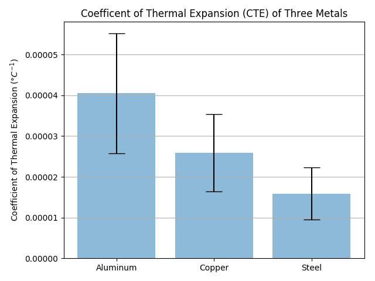
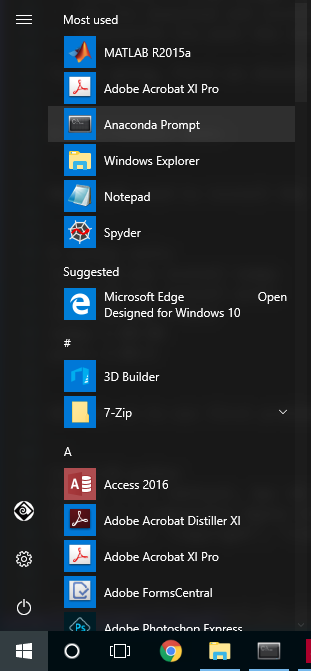

2.3. CTE in a bar chart with error bars¶
Bar charts with error bars are useful in engineering to show the confidence or precision in a set of measurements or calculated values. Bar charts without error bars give the illusion that a measured or calculated value is known to high precision or high confidence.
In this example, we will build a bar plot using Python and Matplotlib. The plot will show the coefficient of thermal expansion (CTE) of three different materials based on a small data set. Then we’ll add error bars to this chart based on the standard deviation of the data.
A bar chart with error bars is shown below. Note the labels on the x-axis and the error bars at the top of each bar.

In order to build this plot, we need a couple of things:
Asset |
Description |
|---|---|
Python |
run the program |
Anaconda Prompt |
create the virtual environment and install packages |
NumPy |
calculate the mean and standard deviation |
Matplotlib |
build the plot |
data set |
data to plot |
Before you can build the plot, make sure you have the Anaconda Distribution of Python installed on your computer.
To get going, we’ll use the Anaconda Prompt to create a new virtual environment. Select Anaconda Prompt from the Windows Start Menu. (If using MacOS or Linux, the terminal could also be used)

Once you have the Anaconda Prompt open, type the following command to create a new virtual environment:
conda create -n errorbars
Next, to activate our new (errorbars) virtual environment, type the following into the Anaconda Prompt
conda activate errorbars
Now that the errorbars virtual environment is active, you should see (errorbars) in parenthesis before the Anaconda Prompt.
Now we’ll install matplotlib and numpy using conda. (pip will work to install these packages as well) You can write both package names on the same line or use two different conda install lines.
conda install matplotlib numpy
To confirm our (errorbars) virtual environment has Matplotlib and NumPy installed, run the command:
conda list
Now let’s create a new Python script called errorbars.py. At the top of the script we need to import numpy and matplotlib.
# errorbars.py
import numpy as np
import matplotlib.pyplot as plt
Next, we need to read in our data. The chart below shows the measured coefficient of thermal expansion (CTE) of three metals: Aluminum, Copper and Steel. The units for coefficient of thermal expansion is per degrees C ( / °C)
Coefficient of thermal expansion of three metals (units: / °C)¶
Sample |
Aluminum |
Copper |
Steel |
|---|---|---|---|
1 |
6.4e-5 |
4.5e-5 |
3.3e-5 |
2 |
3.01e-5 |
1.97e-5 |
1.21e-5 |
3 |
2.36e-5 |
1.6e-5 |
0.9e-5 |
4 |
3.0e-5 |
1.97e-5 |
1.2e-5 |
5 |
7.0e-5 |
4.0e-5 |
1.3e-5 |
6 |
4.5e-5 |
2.4e-5 |
1.6e-5 |
7 |
3.8e-5 |
1.9e-5 |
1.4e-5 |
8 |
4.2e-5 |
2.41e-5 |
1.58e-5 |
9 |
2.62e-5 |
1.85e-5 |
1.32e-5 |
10 |
3.6e-5 |
3.3e-5 |
2.1e-5 |
We’ll put this data into three different numpy arrays, one array for each metal. Notice the syntax np.array([ ... ]) has a parenthesis ( followed by a square bracket [. We are passing a Python list, [ denoted with square brackets ] into the NumPy array function (argument enclosed in parenthesis).
# Enter raw data
aluminum = np.array([6.4e-5 , 3.01e-5 , 2.36e-5, 3.0e-5, 7.0e-5, 4.5e-5, 3.8e-5, 4.2e-5, 2.62e-5, 3.6e-5])
copper = np.array([4.5e-5 , 1.97e-5 , 1.6e-5, 1.97e-5, 4.0e-5, 2.4e-5, 1.9e-5, 2.41e-5 , 1.85e-5, 3.3e-5 ])
steel = np.array([3.3e-5 , 1.2e-5 , 0.9e-5, 1.2e-5, 1.3e-5, 1.6e-5, 1.4e-5, 1.58e-5, 1.32e-5 , 2.1e-5])
Now we need to calculate the mean (or average) for each of the three material’s CTE using NumPy’s np.mean() function. The means will be the height of each bar in our chart.
# Calculate the average
aluminum_mean = np.mean(aluminum)
copper_mean = np.mean(copper)
steel_mean = np.mean(steel)
Next we’ll calculate the standard deviation for each metal using numpy’s np.std() function. On the plot, we will use the standard deviation as the height of our error bars. The positive error will be show as +1 standard deviation above the mean, and the negative error will be shown as -1 standard deviation below the mean.
# Calculate the standard deviation
aluminum_std = np.std(aluminum)
copper_std = np.std(copper)
steel_std = np.std(steel)
There are a couple more things needed to build the plot. We need the names of the metals to go along our x-axis, one name below each bar. We’ll assign the metal names as list of strings in a variable called materials. We also need a variable that contains the means of the coefficients of thermal expansion, the data we are going to plot. We’ll put these into a Python list called CTEs. Our standard deviations will be used for the height of the error bars. The standard deviations will go together in a list called error.
Let’s code all of these Python list into our errorbars.py script.
# Create lists for the plot
materials = ['Aluminum', 'Copper', 'Steel']
x_pos = np.arange(len(materials))
CTEs = [aluminum_mean, copper_mean, steel_mean]
error = [aluminum_std, copper_std, steel_std]
OK. Now it’s time to build the plot. We are going to build a bar chart with three different bars, one bar for each material: Aluminum, Copper and Steel.
First we will create a figure object called fig and an axis object in that figure called ax using Matplotlib’s plt.subplots() function. Everything in our plot will be added to the ax (axis) object. Next we put a bar chart on our ax (axis) with the ax.bar() method.
Note the arguments passed into the ax.bar() method:
x_posis the array with the count of the number of bars.CTEsis our array which contains the means or heights of the bars.yerr=errorsets the heights of the error bars and the standard deviations.keyword arguments
(align='center', alpha=0.5, ecolor='black', capsize=10)styles the plot.
We’ll put a label on the y-axis with the title “Coefficient of thermal expansion (°C-1)” using ax.set_ylabel. We use ax.set_xticks() to feed in our number list to set the bars as numbers 1, 2, 3. Then we add labels to these numbered bars with ax.set_ticklabels(). ax.set_title() and ax.yaxis.grid(True) adds a title and horizontal grid lines.
Finally, we we’ll save the figure to a file called bar_plot_with_error_bars.png using Matplotlib’s plt.savefig() function. The plt.thight_layout() method ensures our axis and labels don’t get cut off and are visible.
# Build the plot
fig, ax = plt.subplots(figsize=(9,6))
ax.bar(x_pos, CTEs, yerr=error, align='center', alpha=0.5, ecolor='black', capsize=10)
ax.set_ylabel('Coefficient of Thermal Expansion ($\degree C^{-1}$)')
ax.set_xticks(x_pos)
ax.set_xticklabels(materials)
ax.set_title('Coefficent of Thermal Expansion (CTE) of Three Metals')
ax.yaxis.grid(True)
# Save the figure and show
plt.tight_layout()
plt.savefig('bar_plot_with_error_bars.png')
plt.show()
The final plot looks like this: